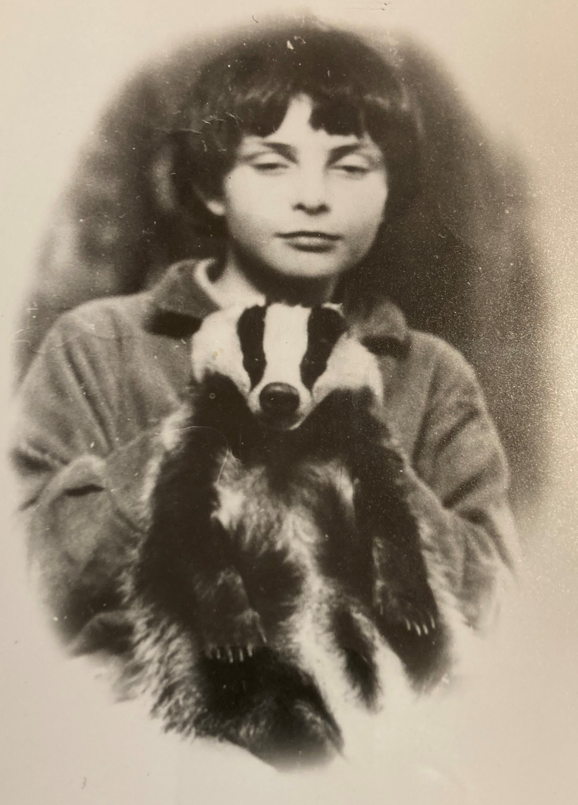

Badgers start to become more active round about now. In the winter months, when food is scarce, they spend much of their time underground in the sett. They're an iconic animal, and feature in the logo of the Wildlife Trust, but for most of us that's about as close as we ever get to seeing one.
There's an active sett on Reaside Farm, and we put up a camera nearby hoping to get sight of them. A few nights later, we captured this very inquisitive badger out and about, probably looking for earthworms.
Caught on camera: a badger from the sett on Reaside Farm, out and about after dark.
Badgers are generally more wary of humans than foxes, although they're surprisingly adventurous in their diet: worms are just a nutritious staple. We often see the scrapes they've made in the soil while searching for them.
I've always had a soft spot for badgers, having grown up with one in mid-Wales in the 1960s. Some local farmers had been out digging up a sett (this was before badgers became a protected species), and knowing my mother had a fascination with them, they turned up with a tiny cub in a huge sack and a warning: be careful, it'll have your finger off. In fact, Toddy was nothing of the sort, and she quickly became part of the family. She had her own bed in the sitting room and lived in the house alongside the children, cats and dogs, fastidiously clean and never once making a mess indoors. She loved nothing more than a tummy scratch.

Toddy, our family's pet badger, in the 1960s.
Most of the time she was very gentle, and loved to play with the other animals, but I remember her giving visitors a nip if they showed any fear. Like any badger, she slept for most of the day and headed off as it started to get dark.
One night we were woken by a terrible racket outside. A large male badger (they can grow to 12kg and be quite intimidating) was having a fight with Toddy outside the front door. Not knowing what else to do, my mother went inside, fetched a cricket bat, and gave the male an almighty smack on the bottom. It froze on the spot, then shot off at speed into the woods.
Toddy even came on holiday with us, though that turned out not to be such a good idea. She went missing in Yorkshire, and by the time we reached Scotland there was a message waiting for us: "badger's back, come quickly."
A pet badger was not exactly normal, even in the remote depths of Wales in the 1960s, and I remember the BBC turning up one day to film a piece about a family living with a badger. We had to go to our neighbours' house to watch it, since we didn't have a television of our own at the time.
We live on a small, densely populated island, but it does seem a shame we can't find a better way to give badgers their space and live alongside them. They've been here a good deal longer than we have.